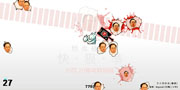
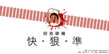

坦克碌豬 快.狠.準
| Tank Roll Over Piggies 坦克碌豬 快.狠.準 / 2007-2009 / Digital Media 數碼媒體 Direct Link: http://wesley.com.hk/artist/tank.html | ||||||
|  |  | |||||
Link 連結:
20th years of Tiananmen incident Version 六四20周年特別版 : http://wesley.com.hk/viiv/
Full Version 完全版: http://wesley.com.hk/mali/
Clean Version 淨化版: http://wesley.com.hk/mali/clean.html
Artist Statement 創作自述:
An Online mini game that refering to someone's conscienceless speech about the 4 June 1989, Tiananmen incident. For friends to release their anger in a funny way. For "someone", it is a counter-propaganda in the internet 2.0 way.
因應特定人士對八九年六四天安門事件的缺德言論而作的迷你理網路遊戲。
把該等人士置放於相反處景，為不滿該等人士的朋友提供趣味的宣洩途徑，同時該等人士作internet2.0式反宣傳。